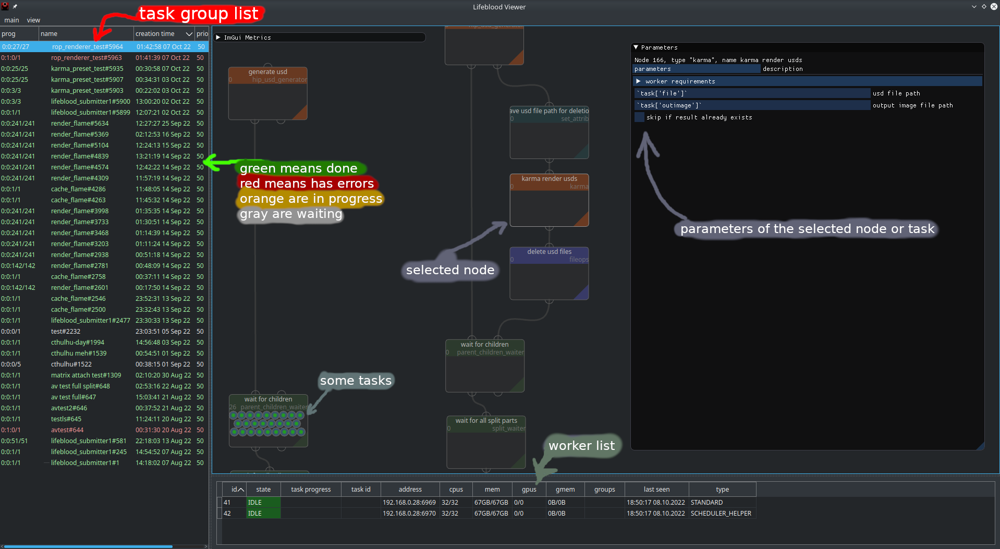
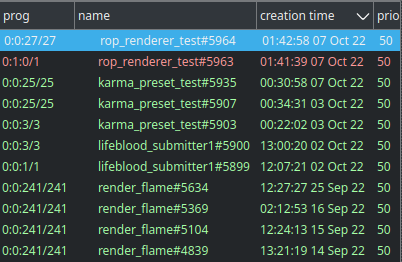
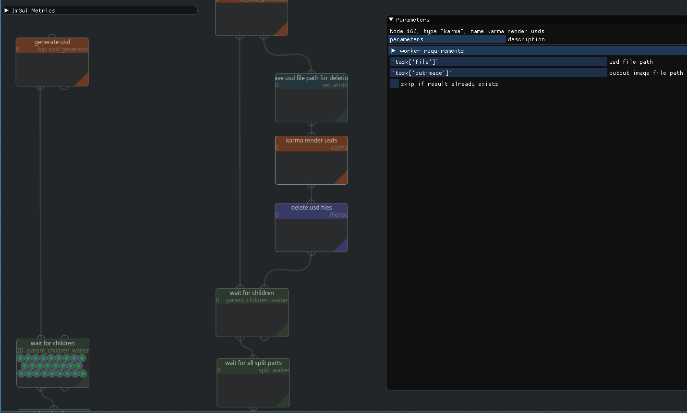
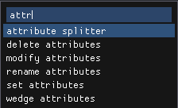
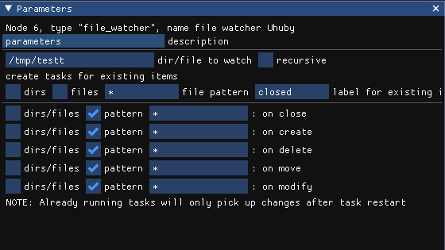
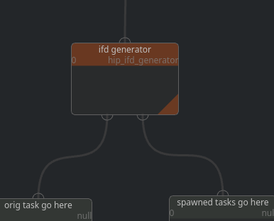
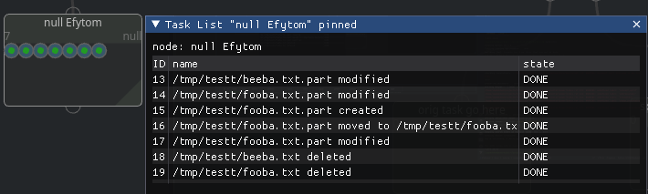
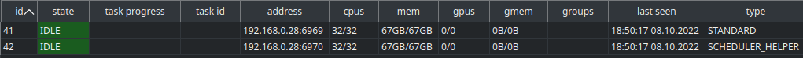

Lifeblood Viewer#
Overview#
Lifeblood Viewer allows you to connect to a running Scheduler and watch and manipulate task processing.
Note
viewer does not work by itself, it is only a GUI for a scheduler, so a scheduler needs to be configured and launched somewhere on the network before you will be able to see anything in the viewer
Refer to Overview of Lifeblood to understand the main concepts.
When you start viewer, you will see something like this:
{kind=link}
There are 3 main areas of the window:
Node view (the main central widget)
Task Groups list (to the left)
Worker list (on the bottom)
Widgets#
Group List#
Tasks are grouped in… groups. One task may belong to zero or more groups, but usually it’s just one.
There are several columns there:
prog (short for progress) shows the progress summary of the tasks in this group. you will see 4 numbers there, similar to
1:2:3/6. Those numbers mean<in progress>:<errored>:<done>/<total>number of tasks.The color would mean:
white: all tasks are idle
yellow: has tasks in progress
red: has errored tasks
green: all tasks have finished
name - just the group’s name
creation time - time when the group was create (not tasks of the group)
priority - group priority sets the base priority for it’s tasks. In case task belongs to multiple groups - maximum of group priorities is taken
Node View#
This is the main work area. Here you can create and connect nodes, change their parameters, inspect tasks and adjust their processing if needed.
Working with nodes#
Creating nodes#
Use TAB to open node creation menu. There you can type to filter nodes by type name or tags. Press Enter to create a new node of currently selected type, or double click any element of the list
Modifying nodes#
You can select nodes by clicking on them, or dragging a selection box over multiple nodes
For selected node you may see it’s parameters in the parameter window
Here you can configure the node.
right click on any parameter displays a context menu, where you can enable Parameter expressions. Note, that you will NOT be able to preview the result of your expression, as it will only be evaluated for processing tasks.
Note
Parameters require pressing Enter to confirm changes. If you just change focus - parameter value will get reverted.
To Rename a node - right click it, and select rename
To Delete nodes - select nodes you want to delete and press del hotkey
TODO: explain saving settings presets
Connecting nodes#
To connect nodes you can just click and drag one node’s output into another node’s input, or vice versa.
Connections represent where tasks leaving a node will be sent further.
Nodes may have multiple inputs and outputs. The purposes of inputs and outputs are defined by node type, refer to node’s documentation to understand the purpose for specific input output.
Spawning pattern is a common pattern for nodes that spawn children. Such nodes usually have one input and 2 outputs. First output is output for the item that came through the input, and Second output is for newly generated tasks.
For example, ifd generator node takes an input task with scene parameters, and generates new tasks from it, each representing one ifd file generated. New tasks are sent through the second output, while the original task is sent through the first output.
One input may have multiple incoming connections, but be very careful with one output having multiple outgoing connections. Tasks are persistent entities, so while multiple incoming connections would just gather tasks from multiple nodes, multiple outgoing connections imply that a task needs to be duplicated
Instead of duplicating a task, a split will be generated into the amount of subtasks equal to the number of outgoing connections. To Emphasise this - an additional overlay will be drawn on top of such connections.
most probably not what you want#
Warning
While multiple outgoing connections are allowed, it is most probably NOT WHAT YOU WANT, unless you know exactly what you are doing.
Task List#
Right click a node and select task list
this will opened a task list pinned on clicked node.
You can also open a “unpinned” task list from Main Menu > Windows > Task List.
This task list will show tasks for any selected node
This is a convenient alternative view into the status of tasks of a node. You can select tasks by clicking on them.
Worker List#
This widget show the list of workers connected to the scheduler and their short status.
Workers can be of several types, most common types are STANDARD and SCHEDULER_HELPER
STANDARD is every normal worker you might start, directly or through worker pools,
SCHEDULER_HELPER are workers local to the scheduler, they aim to offload certain long running
things from scheduler that are known to require little to no processing power, such as watching files
the table columns show the following information:
id - scheduler’s internal identifier for the worker, not useful information
state - what state is the worker in. most common states are:
OFF - worker process is not running
IDLE - worker does nothing
BUSY - worker is running an invocation
ERROR - something is bad, worker is started, but cannot perform the worker stuff
task progress - when worker is in
BUSYstate, this will indicate current invocation’s progresstask id - when worker is in
BUSYstate, this will indicate the id of the task that was source for the invocation the worker is working onaddress - worker process’s address in Address Chain format
Following columns show some computational resources of the worker available/total
Any invocation has resource requirements. Those requirements are set by a node during processing. Obviously, neither scheduler nor worker can know beforehand how much resources an invocation may need, therefore requirements are resource limitations that worker may enforce on the spawned process (if supported by platform and configured to do so)
Whenever an invocation is started by a worker - the resource requirements of the invocation are deducted from all workers running on the same machine. see resource management for details
CPUs - the amount of cores
mem - the amount of main RAM available to cpus
GPUs - the amount of GPUs
gmem - the amount of total GPU memory
groups - groups assigned to this worker, usually groups are taken from worker configuration, so they are the same for all workers spawned on the same machine
last seen - time of the last successful ping from scheduler to worker
type - worker type, as was explained above